0x00 前言
今年国赛分区赛遇到一个还原 PHP mt_rand 种子的题（由于太菜了 break 的时候根本没有做到这一步
这一部分的源码是这样的
1
2
3
4
5
6
7
8
9
10
11
12
13
14
15
16
17
18
19
20
21
22
23
<? php
foreach ( scandir ( '.' ) as $i ) {
if ( strlen ( $i ) === 36 ) {
include $i ;
}
}
if ( ! isset ( $_GET [ 'pass' ])) {
echo $style3 . "需要登录</br> \n " ;
die ( $form );
}
if ( $_GET [ 'pass' ] !== 'nya_nop_nya~' ) {
echo $style3 . "密码错误. 为什么不回去看看呢?</br> \n " ;
die ( $form );
}
echo $style2 ;
mt_srand ( rand ( 10000000 , 99999999 ));
echo "<nya>你要的flag!</br> \n " ;
echo openssl_encrypt ( $flag , 'aes-256-cfb' , mt_rand (), 0 , mt_rand ());
echo " \n </br>看不懂?不如来抽卡吧!</br> \n " . $form2 ;
for ( $i = 0 ; $i < $_GET [ 'roll' ]; $i += 1 ) {
echo mt_rand () . " " ;
}
echo " \n </nya>" ;
通过后续产生的随机数还原出随机数种子，然后得到加密的密钥和 IV
这里有两种攻击思路：第一种就是爆破，反正种子就 8 位整数，爆破就是费点时间；第二种就是通过 mt_rand 的规律还原种子
之前看到过大佬写的不用爆破还原随机数种子的文章：BREAKING PHP’S MT_RAND() WITH 2 VALUES AND NO BRUTEFORCE ，这里跟着大佬的思路自己分析一下
0x01 从源码开始
mt_rand 相关的函数在 ext/stadard/mt_rand.c 中，其中 mt_rand 对应的函数如下
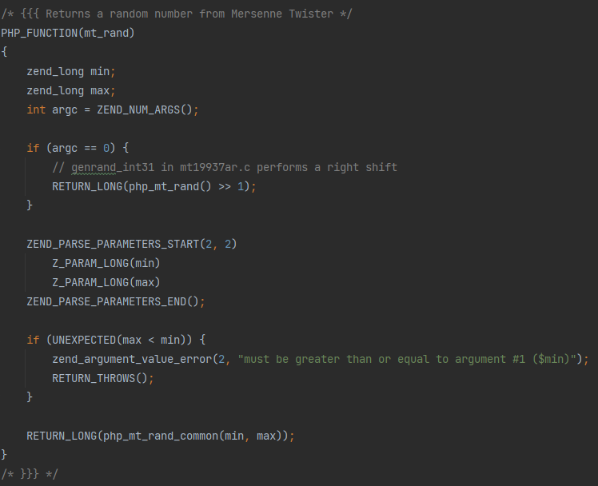
mt_rand 函数
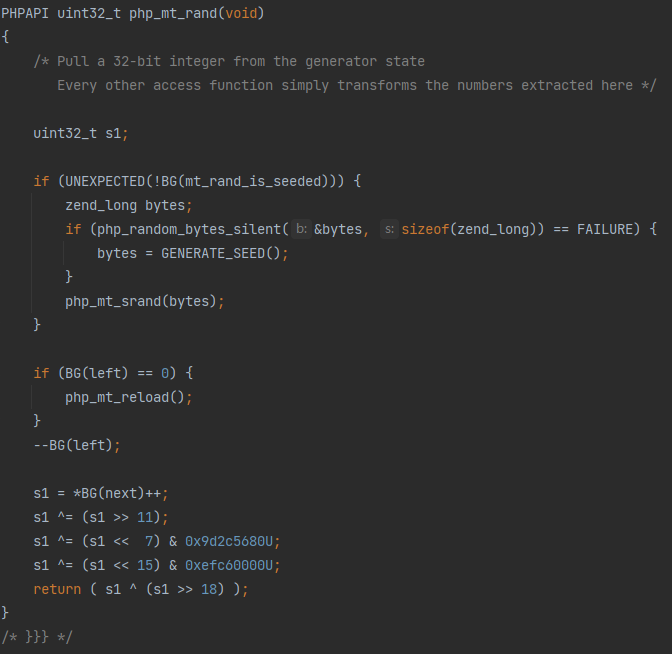
php_mt_rand 函数
其中 BG 宏的定义在 ext/standard/mt_rand.c 中，大概就是获取类似全局变量的东西
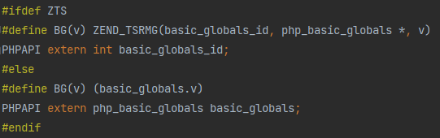
BG 宏定义
用于设置随机数种子的 php_mt_srand 的源码如下
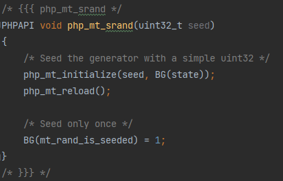
php_mt_srand 函数
其中 state 变量为初始化后的状态向量，储存产生的随机数
php_mt_initialize 和 php_mt_reload 的源码如下
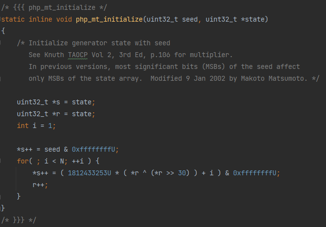
php_mt_initialize
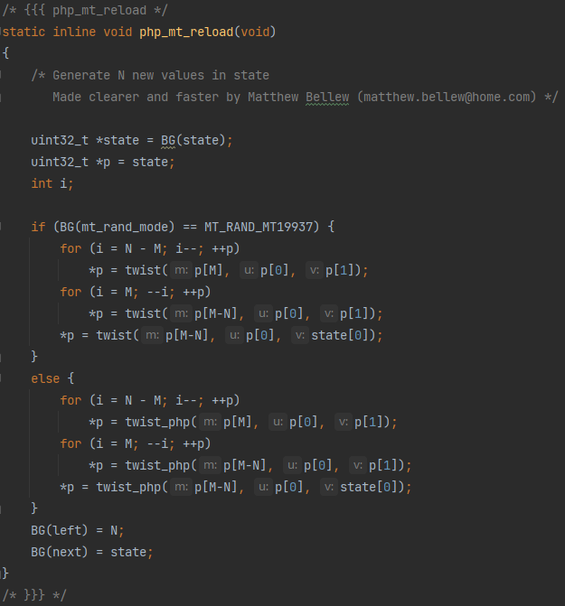
php_mt_reload 函数
其中 MT_RAND_MT19937 定义在 ext/standard/php_mt_rand.h 中
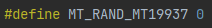
MT_RAND_MT19937
选择模式的操作在 mt_srand 函数中，默认为 MT19937 模式使用 twist 宏，若选择 1 则为 PHP 模式使用 twist_php 宏
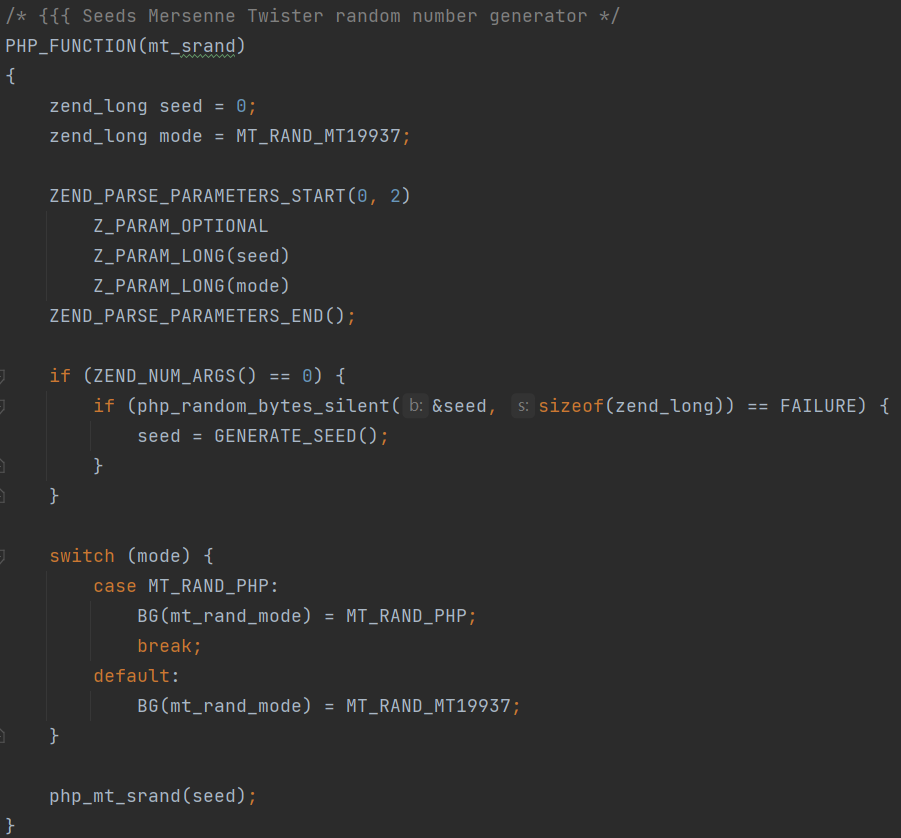
mt_srand 函数
其中一些全局变量和宏的定义如下
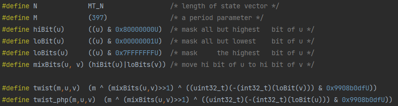
全局变量和宏
MT_N 定义在 ext/standard/basic_functions.h 中，为初始化产生的状态向量的长度
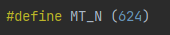
MT_N
php_mt_initialize 函数的作用很简单，产生初始的状态向量，每个值都由它前一个值生成，第一个值为输入的种子
php_mt_reload 函数对初始状态向量进行混合，产生 N 个新的值作为被 mt_rand 使用的随机数
php_mt_rand 函数再对这些值进行简单的处理生成最终的随机数
0x02 从后往前看
mt_rand
首先从被调用的 mt_rand 开始分析，mt_rand 返回的随机数为 php_mt_rand 返回值右移一位
1
RETURN_LONG ( php_mt_rand () >> 1 );
由于右移后其最低位丢失，故一个输出的随机数对应两种可能的 php_mt_rand 返回值，其最低位分别为 0 和 1
php_mt_rand
php_mt_rand 返回值为经过处理的 php_mt_reload 中产生的值，其中进行处理的代码如下
1
2
3
4
s1 ^= ( s1 >> 11 );
s1 ^= ( s1 << 7 ) & 0x9d2c5680U ;
s1 ^= ( s1 << 15 ) & 0xefc60000U ;
return ( s1 ^ ( s1 >> 18 ) ); // s1 ^= (s1 >> 18);
这四条代码均为可逆操作
s1 ^= (s1 >> 11)
结果高 11 位与原值高 11 位相同，结果低 21 位为原值高 21 位与低 21 位异或结果
故其逆操作如下
1
2
s1 ^= ( s1 >> 11 ); // 恢复 10~20 位
s1 ^= ( s1 >> 22 ); // 恢复 0~9 位 (低 10 位)
s1 ^= (s1 << 7) & 0x9d2c5680U
其逆操作如下
1
2
3
4
s2 = ( s1 << 21 ) ^ ((( s1 << 7 ) & 0x9d2c5680U ) << 21 ); // 恢复高 11 位
s2 = ( s1 << 14 ) ^ ( s2 & ( 0x9d2c5680U << 14 )); // 恢复 14~20 位
s2 = ( s1 << 7 ) ^ ( s2 & ( 0x9d2c5680U << 7 )); // 恢复 7~13 位
s1 ^= s2 & 0x9d2c5680U ; // 恢复低 7 位
s1 ^= (s1 << 15) & 0xefc60000U
结果高 16 位为原值 1~16 位与 0xefc6 相与并与原值高 16 位异或的结果，低 16 位与原值低 16 位相同
故其逆操作与原操作相同
1
s1 ^= ( s1 << 15 ) & 0xefc60000U ; // 恢复高 16 位
s1 ^= (s1 >> 18)
结果高 18 位与原值高 18 位相同，结果低 14 位为原值高 14 位与低 14 位异或结果
故其逆操作与原操作相同
1
s1 ^= ( s1 >> 18 ); // 恢复低 14 位
结合以上四步得到 php_mt_rand 中处理操作的逆操作
1
2
3
4
5
6
7
8
9
10
11
12
13
14
uint32_t reverse_php_mt_rand ( uint32_t s1 ) {
s1 ^= ( s1 >> 18 );
s1 ^= ( s1 << 15 ) & 0xefc60000U ;
s2 = ( s1 << 21 ) ^ ((( s1 << 7 ) & 0x9d2c5680U ) << 21 );
s2 = ( s1 << 14 ) ^ ( s2 & ( 0x9d2c5680U << 14 ));
s2 = ( s1 << 7 ) ^ ( s2 & ( 0x9d2c5680U << 7 ));
s1 ^= s2 & 0x9d2c5680U ;
s1 ^= ( s1 >> 11 );
s1 ^= ( s1 >> 22 );
return s1 ;
}
php_mt_reload
代码中的循环分为两部分，输出状态向量中前 N-M (227) 个值与后 M (397) 个值的产生方法不同
且对于后 M (397) 个值，state_reload[i] 与 state_reload[i-227] 存在一定的关联，即
1
state_reload [ i ] = twist ( state_reload [ i - 227 ], state [ i ], state [ i + 1 ])
其中用到的宏如下
1
2
3
4
5
6
#define hiBit(u) ((u) & 0x80000000U) /* mask all but highest bit of u */
#define loBit(u) ((u) & 0x00000001U) /* mask all but lowest bit of u */
#define loBits(u) ((u) & 0x7FFFFFFFU) /* mask the highest bit of u */
#define mixBits(u, v) (hiBit(u)|loBits(v)) /* move hi bit of u to hi bit of v */
#define twist(m,u,v) (m ^ (mixBits(u,v)>>1) ^ ((uint32_t)(-(int32_t)(loBit(v))) & 0x9908b0dfU))
#define twist_php(m,u,v) (m ^ (mixBits(u,v)>>1) ^ ((uint32_t)(-(int32_t)(loBit(u))) & 0x9908b0dfU))
MT_RAND_MT19937 模式
对于右半部分，当 state[i+1] 最低位为 0 时，右半部分为 0，当 state[i+1] 最低位为 1 时，右半部分为 0x9908b0dfU
由于 0x9908b0dfU 最高位为 1，所以右半部分最高位与 state[i+1] 最低位相同
又由于 mixBits(u,v)>>1 最高位一定为0，若我们已知 state_reload[i] 与 state_reload[i-227]，则 state_reload[i] ^ state_reload[i-227] 最高位与右半部分最高位即与 state[i+1] 最低位相同
进而求出 mixBits(u,v) >> 1 的值，该值的低 30 位为 state[i+1] 的 1~30 位，30 位为 state[i] 的最高位
此时我们已知 state[i+1] 的低 31 位，则该值共有两种情况，我们可以根据这两种情况分别求出对应的种子 (通过分析 php_mt_initialize 函数)，利用该种子生成的 state_reload 与已知值比较，确定正确的种子值
MT_RAND_PHP 模式
由于右半部分最高位与 state[i] 最高位相同，所以可以只能得到 state[i+1] 的 1~31 位，共有四种情况
php_mt_initialize
php_mt_initialize 比较简单，每一个值都只与前一个值相关，其生成过程为
1
state [ i ] = ( 0x6c078965U * ( state [ i - 1 ] ^ ( state [ i - 1 ] >> 30 )) + i ) & 0xffffffffU ;
其中 & 0xffffffffU 操作等价于 % 0X100000000U
求得 0x6c078965 对于模 0x100000000 的逆为 0x9638806d
故该操作的逆操作为
1
2
state [ i - 1 ] = ( 0x9638806dU * ( state [ i ] - i )) & 0xffffffffU ;
state [ i - 1 ] ^= state [ i - 1 ] >> 30 ;
0x03 逆操作综合
将各个函数的逆操作综合一下，在我们已知相距 227 的两个随机数 rand[i] 与 rand[i-227] 和对应的 i 的情况下，state_reload[i] 与 state_reload[i-227] 的取值共有四种组合，对每一种组合分别进行逆操作得到种子，并通过测试确定正确的种子 (一般来说只有一种组合可以得到有效的种子)
简单写了一个 mt_rand 种子还原的程序
1
2
3
4
5
6
7
8
9
10
11
12
13
14
15
16
17
18
19
20
21
22
23
24
25
26
27
28
29
30
31
32
33
34
35
36
37
38
39
40
41
42
43
44
45
46
47
48
49
50
51
52
53
54
55
56
57
58
59
60
61
62
63
64
65
66
67
68
69
70
71
72
73
74
75
76
77
78
79
80
81
82
83
84
85
86
87
88
89
90
91
92
93
94
95
96
97
98
99
100
101
102
103
104
105
106
107
108
109
110
111
112
113
114
115
116
117
118
119
120
121
122
123
124
125
126
127
128
129
130
131
132
133
134
135
136
137
138
139
#include <stdio.h>
#include <stdint.h>
#define N (624)
#define M (397)
#define hiBit(u) ((u) & 0x80000000U)
#define loBit(u) ((u) & 0x00000001U)
#define loBits(u) ((u) & 0x7FFFFFFFU)
#define mixBits(u, v) (hiBit(u)|loBits(v))
#define twist(m,u,v) (m ^ (mixBits(u,v)>>1) ^ ((uint32_t)(-(int32_t)(loBit(v))) & 0x9908b0dfU))
#define twist_php(m,u,v) (m ^ (mixBits(u,v)>>1) ^ ((uint32_t)(-(int32_t)(loBit(u))) & 0x9908b0dfU))
static inline void php_mt_initialize ( uint32_t seed , uint32_t * state ) {
uint32_t * s = state ;
uint32_t * r = state ;
int i = 1 ;
* s ++ = seed & 0xffffffffU ;
for ( ; i < N ; ++ i ) {
* s ++ = ( 1812433253U * ( * r ^ ( * r >> 30 ) ) + i ) & 0xffffffffU ;
r ++ ;
}
}
static inline void php_mt_reload ( uint32_t * state , uint32_t mode )
{
uint32_t * p = state ;
int i ;
if ( mode == 0 ) {
for ( i = N - M ; i -- ; ++ p )
* p = twist ( p [ M ], p [ 0 ], p [ 1 ]);
for ( i = M ; -- i ; ++ p )
* p = twist ( p [ M - N ], p [ 0 ], p [ 1 ]);
* p = twist ( p [ M - N ], p [ 0 ], state [ 0 ]);
} else {
for ( i = N - M ; i -- ; ++ p )
* p = twist_php ( p [ M ], p [ 0 ], p [ 1 ]);
for ( i = M ; -- i ; ++ p )
* p = twist_php ( p [ M - N ], p [ 0 ], p [ 1 ]);
* p = twist_php ( p [ M - N ], p [ 0 ], state [ 0 ]);
}
}
uint32_t reverse_php_mt_rand ( uint32_t s1 ) {
uint32_t s2 ;
s1 ^= ( s1 >> 18 );
s1 ^= ( s1 << 15 ) & 0xefc60000U ;
s2 = ( s1 << 21 ) ^ ((( s1 << 7 ) & 0x9d2c5680U ) << 21 );
s2 = ( s1 << 14 ) ^ ( s2 & ( 0x9d2c5680U << 14 ));
s2 = ( s1 << 7 ) ^ ( s2 & ( 0x9d2c5680U << 7 ));
s1 ^= s2 & 0x9d2c5680U ;
s1 ^= ( s1 >> 11 );
s1 ^= ( s1 >> 22 );
return s1 ;
}
uint32_t reverse_php_mt_initialize ( uint32_t si , uint32_t i ) {
for ( uint32_t j = i ; j > 0 ; j -- ) {
uint32_t temp = ( 0x9638806dU * ( si - j )) & 0xffffffffU ;
si = temp ^ ( temp >> 30 );
}
return si ;
}
uint32_t reverse_php_mt_reload_0 ( uint32_t sri , uint32_t sri_227 , uint32_t i ) {
uint32_t si_1_lsb = ( sri ^ sri_227 ) >> 31 ; // LSB of state[i+1]
uint32_t mix = ( sri ^ sri_227 ) ^ ( si_1_lsb ? 0x9908b0dfU : 0 );
uint32_t si_1_31 = ( mix << 2 >> 1 ) | si_1_lsb ; // 0~30 bits of state[i+1]
for ( uint32_t h = 0 ; h < 2 ; h ++ ) {
uint32_t si_1 = si_1_31 | ( h << 31 );
uint32_t seed = reverse_php_mt_initialize ( si_1 , i + 1 );
uint32_t state [ N ];
php_mt_initialize ( seed , state );
php_mt_reload ( state , 0 );
if ( state [ i - 227 ] == sri_227 ) {
return seed ;
}
}
return 0 ;
}
uint32_t reverse_php_mt_reload_1 ( uint32_t sri , uint32_t sri_227 , uint32_t i ) {
uint32_t si_lsb = ( sri ^ sri_227 ) >> 31 ; // LSB of state[i]
uint32_t mix = ( sri ^ sri_227 ) ^ ( si_lsb ? 0x9908b0dfU : 0 );
uint32_t si_1_1_30 = mix << 2 >> 1 ; // 1~30 bits of state[i+1]
for ( uint32_t h = 0 ; h < 2 ; h ++ ) {
for ( uint32_t l = 0 ; l < 2 ; l ++ ) {
uint32_t si_1 = si_1_1_30 | l | ( h << 31 );
uint32_t seed = reverse_php_mt_initialize ( si_1 , i + 1 );
uint32_t state [ N ];
php_mt_initialize ( seed , state );
php_mt_reload ( state , 1 );
if ( state [ i - 227 ] == sri_227 ) {
return seed ;
}
}
}
return 0 ;
}
int main () {
uint32_t i ; // index of one random number
uint32_t ri_227 ; // rand[i-227]
uint32_t ri ; // rand[i]
uint32_t mode ; // 0 for MT_RAND_MT19937 / 1 for MT_RAND_PHP
printf ( "i(>=227):" );
scanf ( "%u" , & i );
printf ( "rand[i-227]([%u]):" , i - 227 );
scanf ( "%u" , & ri_227 );
printf ( "rand[i]([%u]):" , i );
scanf ( "%u" , & ri );
printf ( "mode(0/1):" );
scanf ( "%u" , & mode );
for ( uint32_t a = 0 ; a < 2 ; a ++ ) {
for ( uint32_t b = 0 ; b < 2 ; b ++ ) {
uint32_t sri = reverse_php_mt_rand (( ri << 1 ) | a );
uint32_t sri_227 = reverse_php_mt_rand (( ri_227 << 1 ) | b );
if ( mode == 0 ) {
printf ( "%u \n " , reverse_php_mt_reload_0 ( sri , sri_227 , i ));
} else {
printf ( "%u \n " , reverse_php_mt_reload_1 ( sri , sri_227 , i ));
}
}
}
return 0 ;
}
0x04 测试
通过 0x01 中的题对上述代码进行简单测试
首先生成 228 个随机数，由于加密时已经生成 2 个随机数，所以此时输出第一个随机数为 rand[2]，最后一个随机数为 rand[229]
1
/flag.php?pass=nya_nop_nya~&roll=228
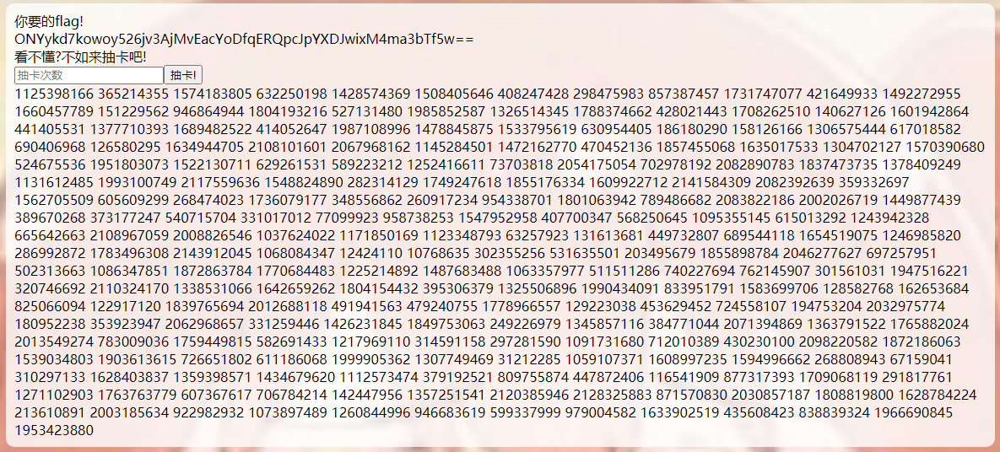
生成 288 个随机数
使用上述代码进行种子还原操作，其中 i 为 229，mode 为 0
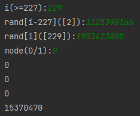
还原随机数种子
比较结果可知，随机数种子应为 15370470，使用该种子生成随机数对给定加密信息进行解密即可得到 flag
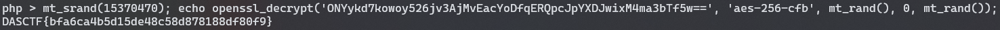
解密得到 flag
0x05 后记
众所周知，不会密码学的二进制不是一个合格的 Web 手（x
{kind=link}
{kind=link}
{kind=link}
{kind=link}
{kind=link}
{kind=link}
{kind=link}
{kind=link}
{kind=link}
{kind=link}
{kind=link}
{kind=link}
{kind=link}